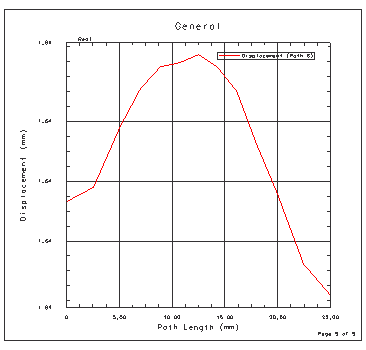
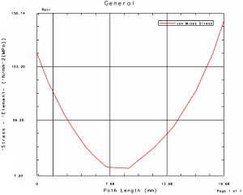
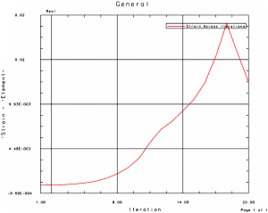

可以针对当前后处理视图中显示的结果创建 XY 图表。共由两种基本类型的图表：
可以从单个结果集和一个通过部件的路径来针对结果绘制图表。可以将路径定义为一系列节点，这些节点也可以是特征边缘上各个节点，也可以是一条通过空间中所定义点的直线
可以绘制单个节点处的结果与模式、时间步或迭代的关系图
创建的是 AFU 文件形式的图表。在创建图表之后，可以使用函数和图表工具来进一步优化图表的显示。有关更多信息，请参见联机帮助中的函数和图表。
在您更改图表格式之前，最好创建一个图表模板。这将允许您为图表创建并保存唯一的格式。如果您不创建图表模板，对图表格式的任何更改都将应用至默认的图表模板中。
|

|
在路径上创建图表：
右击后处理视图节点并选择新建路径以打开路径对话框。
使用路径对话框中的工具定义路径。
右击后处理视图节点并选择创建图表。

要创建跨越多个迭代的图表：
右击后处理视图节点并选择新建图表以打开图表对话框。
指定跨多个迭代作为图表类型。
使用图表对话框中的工具来选择感兴趣的节点。
